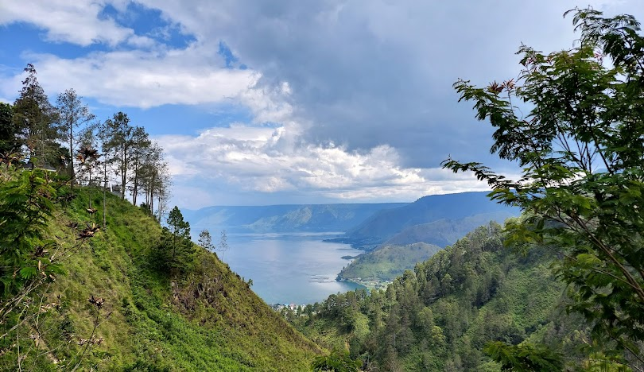
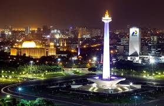
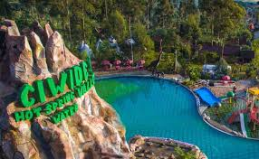

Dokumentasi Pariwisata Indonesia



DANAU TOBA
Danau Toba adalah danau alami berukuran besar di Sumatera Utara, Indonesia yang terletak di kaldera gunung supervulkan. Danau ini memiliki panjang 100 kilometer, lebar 30 kilometer.

JAKARTA
Jakarta, secara resmi bernama Daerah Khusus Ibukota Jakarta atau DKI Jakarta, sebelumnya dikenal sebagai Batavia adalah ibu kota Indonesia dan sekaligus daerah otonom setingkat provinsi.
BALI
Bali adalah sebuah provinsi di Indonesia yang terletak pada bagian barat Kepulauan Nusa Tenggara dan beribu kota di Kota Denpasar. Pulau Bali,.

BANDUNG
Kota Bandung adalah sebuah kota sekaligus menjadi ibu kota provinsi di Provinsi Jawa Barat, Indonesia. Kota Bandung juga merupakan kota terbesar ketiga di Indonesia, setelah Jakarta.